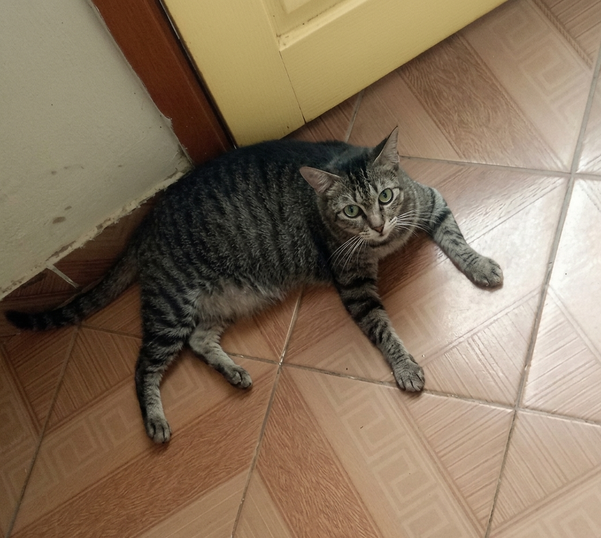
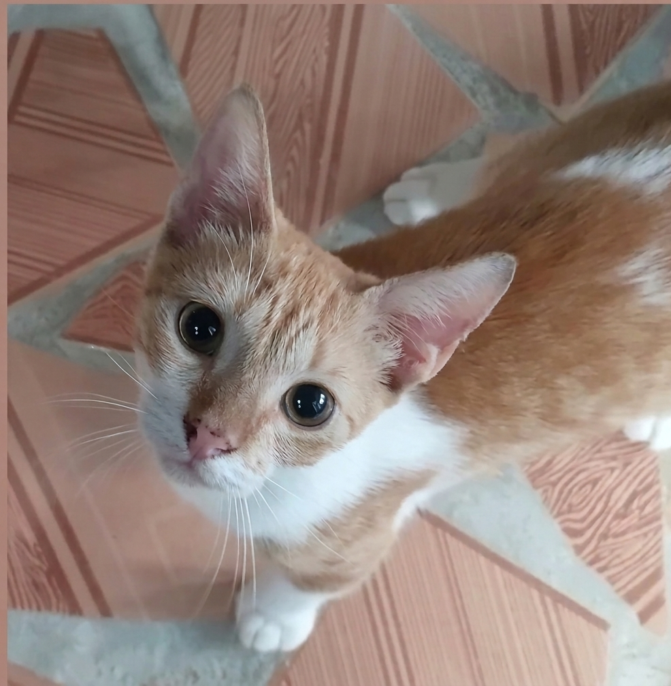
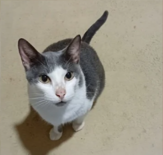
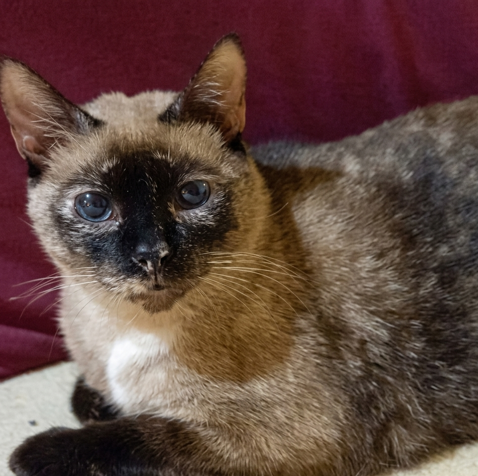
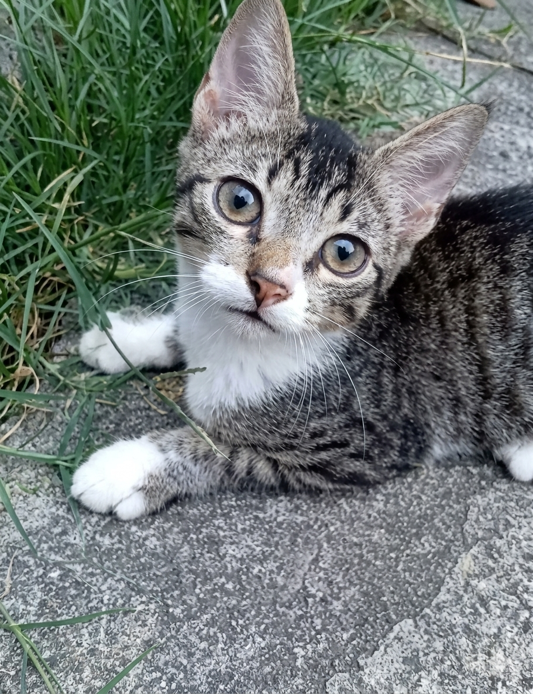
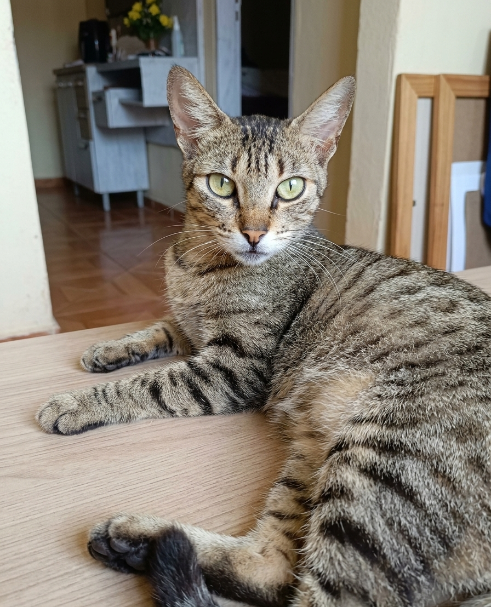
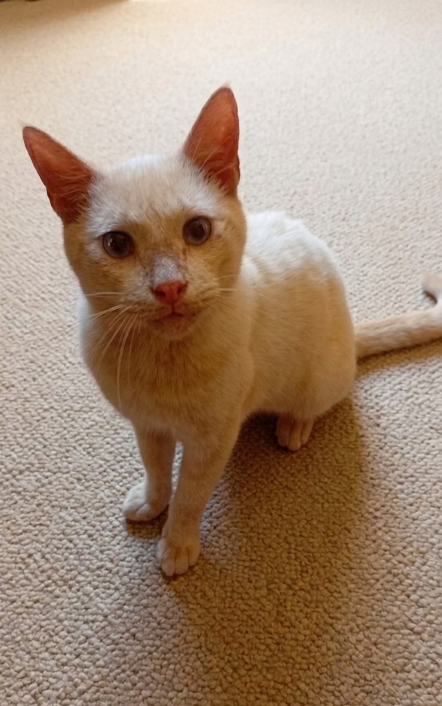

Atualmente, diante dos frequentes casos de maus-tratos e outros crimes contra animais, torna-se cada vez mais essencial falar sobre Educação Animal. Esse processo deve começar desde cedo, contribuindo para a formação de pessoas mais conscientes, empáticas e responsáveis. Aos poucos, esse cenário vem evoluindo por meio de campanhas educativas que incentivam, principalmente nas crianças, atitudes baseadas no respeito e no cuidado com os animais. Essa construção gradual promove uma mudança cultural importante, reduzindo maus-tratos — inclusive os involuntários, muitas vezes causados pela desinformação — e formando uma geração mais ética, sensível e comprometida com o bem-estar animal.
A educação também desempenha um papel fundamental na formação de tutores mais responsáveis, capazes de oferecer ambientes mais saudáveis, seguros e equilibrados para seus pets. Quando o conhecimento é compartilhado de forma acessível e prática, fortalece-se o vínculo entre humanos e animais, estimulando uma convivência mais harmoniosa e consciente. Assim, pequenas mudanças de comportamento no presente contribuem para uma transformação cultural mais ampla e duradoura no futuro.
Um dos serviços que mais impactam positivamente a qualidade de vida animal é a castração. Além de trazer diversos benefícios à saúde de cães e gatos, ela é uma das principais estratégias no combate ao abandono e ao crescimento descontrolado da população de animais. Felizmente, nos últimos anos, campanhas gratuitas de castração, vacinação antirrábica e microchipagem têm se tornado mais frequentes em diversas cidades brasileiras, promovidas por prefeituras e órgãos públicos. Essas iniciativas são fundamentais, pois democratizam o acesso a serviços essenciais, especialmente para a população de baixa renda, ampliando o alcance das políticas de bem-estar animal.
Nesse contexto, surge o @ambientegato. Trata-se de um projeto social que começou a ser idealizado anos atrás, mas que ganhou forma e visibilidade a partir de abril de 2025, por meio de uma página no Instagram. A iniciativa nasceu da busca por informações confiáveis sobre cuidados com gatos e serviços públicos voltados à causa animal. Ao acompanhar profissionais da área, como médicos-veterinários, e perfis oficiais de instituições, ficou evidente que havia uma grande quantidade de conteúdo útil circulando, mas ainda pouco organizado e divulgado de forma acessível ao público geral.
Percebendo essa lacuna, o projeto passou a reunir e compartilhar informações relevantes, facilitando o acesso de tutores a conteúdos confiáveis sobre saúde, bem-estar e serviços disponíveis. Mais do que apenas informar, o @ambientegato busca incentivar a construção de uma rede de aprendizado coletivo, onde experiências são trocadas e o conhecimento é ampliado de forma colaborativa. Dessa forma, o projeto contribui não apenas para melhorar a qualidade de vida dos animais, mas também para fortalecer uma cultura de cuidado, respeito e responsabilidade entre as pessoas e seus pets.







Se você...